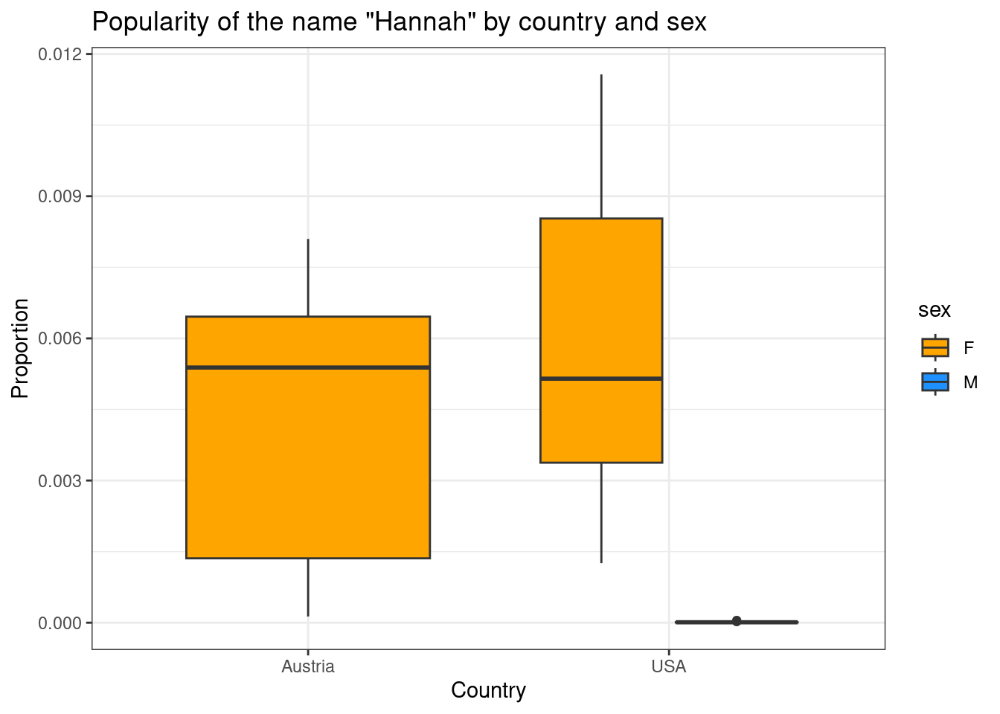

Lesson 3 extension: Data wrangling, t-tests and ANOVA
Course website: https://hannahmetzler.eu/R_intro/
Author
Hannah Metzler
Published
March 27, 2024
1 Project for extension of lesson 3: Comparison of babynames in Austria and the US
What about baby names in Austria?
Below, we read in data from Austria, make it comparable to the US data set, and then run a t-test to compare the popularity of baby names in the two countries.
2 Reading in and looking at data
2.1 Data from Austria
I downloaded data about given names in Austria from 1984 to 2022 from data.bv.at. Download the first file from there and put it into your data folder.
Continue working in your cleaning script from lesson 3, in the # READ DATA #### section.
To read the Austrian data, try the function csv().
Add this after the lines that read in the data from the USA.
summary() shows us that the earliest year in the data is 1984, the latest one 2022.
It also shows us that the column “Geschlecht” (sex) is not yet coded as a categorical variable.
summary(data_aut)
C-JAHR-0 C-WOHNBEZIRK-0 C-GESCHLECHT-0 F-VORNAME_NORMALISIERT
Min. :1984 Min. :101 Min. :1.000 Length:1265460
1st Qu.:1996 1st Qu.:319 1st Qu.:1.000 Class :character
Median :2007 Median :506 Median :2.000 Mode :character
Mean :2005 Mean :563 Mean :1.535
3rd Qu.:2015 3rd Qu.:804 3rd Qu.:2.000
Max. :2022 Max. :923 Max. :2.000
F-ANZAHL_LGEB
Min. : 1.00
1st Qu.: 1.00
Median : 1.00
Mean : 2.36
3rd Qu.: 2.00
Max. :76.00
The function View() opens the data in an extra window.
View(data_aut)
The function str() shows you the structure of the data set.
# A tibble: 6 × 5
year living_district sex name n
<dbl> <dbl> <dbl> <chr> <dbl>
1 1984 101 1 Andreas 4
2 1984 101 1 Bernd 1
3 1984 101 1 Christian 2
4 1984 101 1 Christoph 2
5 1984 101 1 Clemens 1
6 1984 101 1 Daniel 3
4.2 Selecting rows
If we compare the US and the Austrian data set, we can see that they cover different time spans.
summary(data_usa)
year sex name n
Min. :1880 Length:2370 Length:2370 Min. : 5.0
1st Qu.:1931 Class :character Class :character 1st Qu.: 17.0
Median :1965 Mode :character Mode :character Median : 102.0
Mean :1960 Mean : 975.2
3rd Qu.:1990 3rd Qu.: 418.8
Max. :2017 Max. :54851.0
prop
Min. :2.310e-06
1st Qu.:1.247e-05
Median :8.686e-05
Mean :5.916e-04
3rd Qu.:4.013e-04
Max. :2.927e-02
summary(data_aut_clean)
year living_district sex name
Min. :1984 Min. :101 Min. :1.000 Length:1265460
1st Qu.:1996 1st Qu.:319 1st Qu.:1.000 Class :character
Median :2007 Median :506 Median :2.000 Mode :character
Mean :2005 Mean :563 Mean :1.535
3rd Qu.:2015 3rd Qu.:804 3rd Qu.:2.000
Max. :2022 Max. :923 Max. :2.000
n
Min. : 1.00
1st Qu.: 1.00
Median : 1.00
Mean : 2.36
3rd Qu.: 2.00
Max. :76.00
Let’s keep only years we have in both datasets. First, filtering the Austrian dataset:
data_aut_clean <- data_aut %>% dplyr::rename(year ='C-JAHR-0', sex ='C-GESCHLECHT-0',living_district ='C-WOHNBEZIRK-0',name ='F-VORNAME_NORMALISIERT',n ='F-ANZAHL_LGEB') %>%#keep only years up to 2017filter(year <=2017)# Check the new data framesummary(data_aut_clean)
year living_district sex name
Min. :1984 Min. :101 Min. :1.000 Length:1047654
1st Qu.:1994 1st Qu.:319 1st Qu.:1.000 Class :character
Median :2004 Median :506 Median :2.000 Mode :character
Mean :2002 Mean :560 Mean :1.541
3rd Qu.:2011 3rd Qu.:804 3rd Qu.:2.000
Max. :2017 Max. :923 Max. :2.000
n
Min. : 1.000
1st Qu.: 1.000
Median : 1.000
Mean : 2.458
3rd Qu.: 2.000
Max. :76.000
Next, filter out all years before 1984 from the USA data set:
data_usa_clean = data_usa %>%#keep only years from 1984 onfilter(year >1983)summary(data_usa_clean)
year sex name n
Min. :1984 Length:766 Length:766 Min. : 5.0
1st Qu.:1991 Class :character Class :character 1st Qu.: 20.0
Median :1999 Mode :character Mode :character Median : 159.5
Mean :2000 Mean : 1931.1
3rd Qu.:2008 3rd Qu.: 638.5
Max. :2017 Max. :54851.0
prop
Min. :2.320e-06
1st Qu.:9.810e-06
Median :8.263e-05
Mean :9.865e-04
3rd Qu.:3.199e-04
Max. :2.927e-02
4.3 Changing the format of columns
To run tests comparing both countries, we need to join both data frames into one. There are several steps to prepare our data sets for this.
First, columns in both data frames need the same format.
The US data had the following formats (see second column):
So, in the Austrian data, we need sex to be a character vector with levels “M” and “F” instead of “1” and “2”.
We will use the ifelse() function, within a mutate() call to transform the variable sex.
If you check the help for ?ifelse, the Usage section shows you how to use it: ifelse(test, yes, no).
The arguments for the ifelse() function start with a condition (rows where the column sex is equal to “1”), then specifies what happens if the condition is met (use the label “M”), and then lists what should happen otherwise/else (use the label “F”).
Now, add this as a last line to where you created data_aut_clean:
data_aut_clean <- data_aut %>% dplyr::rename(year ='C-JAHR-0', sex ='C-GESCHLECHT-0',living_district ='C-WOHNBEZIRK-0',name ='F-VORNAME_NORMALISIERT',n ='F-ANZAHL_LGEB') %>%#keep only years up to 2017filter(year <=2017) %>%# Recode the levels of sex from 1 and 2, to M and Fmutate(sex =ifelse(sex =="1", "M", "F"))# check if there is now F instead of 1, and M instead of M: glimpse(data_aut_clean)
Next, we need to tell statistics from Austria and the US apart, once they are in a joint data frame. Therefore, let’s add a variable that identifies the country.
We use rep() to repeat “Austria” n times, and set nrow() to the number of rows of the Austrian data.
data_aut_clean <- data_aut %>% dplyr::rename(year ='C-JAHR-0', sex ='C-GESCHLECHT-0',living_district ='C-WOHNBEZIRK-0',name ='F-VORNAME_NORMALISIERT',n ='F-ANZAHL_LGEB') %>%#keep only years up to 2017filter(year <=2017) %>%# Recode the levels of sex from 1 and 2, to M and Fmutate(sex =ifelse(sex =="1", "M", "F")) %>%#create a country variable for Austriamutate(country =rep("Austria", n=nrow(data_aut)))
Now, let’s repeat this step for the USA data. Just add a line to where you started to clean the US data:
data_usa_clean = data_usa %>%#keep only years from 1984 onfilter(year >1983) %>%#Create a country variable for the USmutate(country =rep("USA", n=nrow(babynames)))
4.5 Grouping data and summarising statistics
The US data did not separate names per living district.
To make our Austrian data similar, let’s group names across districts, so that we get the total number of names per year and sex.
Using group_by() first group the data by year, sex and name, because we want the total n for each of these combined categories.
We also add the column country, because we want to keep it, although it does not create any additional grouping.
We then summarise() the data by calculating the sum() of the number of names (n).
summarise() is similar to mutate(), but creates one line of output per group. Here, it collapses across districts, reducing the row number for each name.
mutate() creates as many lines of output as input.
Finally, we ungroup() the data again.
data_aut_clean <- data_aut %>%rename(year ='C-JAHR-0', sex ='C-GESCHLECHT-0',living_district ='C-WOHNBEZIRK-0',name ='F-VORNAME_NORMALISIERT',n ='F-ANZAHL_LGEB') %>%#keep only years up to 2017filter(year <=2017) %>%# Recode the levels of sex from 1 and 2, to M and Fmutate(sex =ifelse(sex =="1", "M", "F")) %>%#create a country variable for Austriamutate(country =rep("Austria", n=nrow(data_aut))) %>%#group by year, sex and name and calculate the new sum for each categorygroup_by(year, sex, name, country) %>%summarise(n =sum(n)) %>%ungroup()
Finally, we also want to calculate the proportion variable that exists in the US data set (propotion of babies getting each name).
N, the total number of babies, is obviously different because the US is larger.
Using the proportion allows us to meaningfully compare the popularity of names between countries.
We first want to calculate the sum of all babies born in each year (n_total), and then divide n of each name by the years’ total.
To calculate the sum per year, we again use group_by(), grouping only by year.
We again add country, also this does not create a group, to keep country variable.
data_aut_clean <- data_aut %>%rename(year ='C-JAHR-0', sex ='C-GESCHLECHT-0',living_district ='C-WOHNBEZIRK-0',name ='F-VORNAME_NORMALISIERT',n ='F-ANZAHL_LGEB') %>%#keep only years up to 2017filter(year <=2017) %>%# Recode the levels of sex from 1 and 2, to M and Fmutate(sex =ifelse(sex =="1", "M", "F")) %>%#create a country variable for Austriamutate(country =rep("Austria", n=nrow(data_aut))) %>%#group by year, sex and name and calculate the new sum for each categorygroup_by(year, sex, name, country) %>%summarise(n =sum(n)) %>%# see lesson 3 page for documentationungroup()%>%#calculate total number of birth per year, and then proportion for each name out of this totalgroup_by(year, country) %>%mutate(n_total =sum(n), prop = n/n_total) %>%ungroup()head(data_aut_clean)
# A tibble: 6 × 7
year sex name country n n_total prop
<dbl> <chr> <chr> <chr> <dbl> <dbl> <dbl>
1 1984 F Abigail Austria 1 83856 0.0000119
2 1984 F Adele Austria 2 83856 0.0000239
3 1984 F Adelheid Austria 23 83856 0.000274
4 1984 F Adina Austria 2 83856 0.0000239
5 1984 F Adriane Austria 1 83856 0.0000119
6 1984 F Agata Austria 1 83856 0.0000119
4.6 Filter out your name
Once this is done, you can again filter out your own name (or the name “Hannah”) by adding another filter() call to each of the data sets. After this, the cleaning and data organizing is finished~
Austrian data set complete data cleaning and organizing:
data_aut_clean <- data_aut %>%rename(year ='C-JAHR-0', sex ='C-GESCHLECHT-0',living_district ='C-WOHNBEZIRK-0',name ='F-VORNAME_NORMALISIERT',n ='F-ANZAHL_LGEB') %>%#keep only years up to 2017filter(year <=2017) %>%# Re-code the levels of sex from 1 and 2, to M and Fmutate(sex =ifelse(sex =="1", "M", "F")) %>%#create a country variable for Austriamutate(country =rep("Austria", n=nrow(data_aut))) %>%#group by year, sex and name and calculate the new sum for each categorygroup_by(year, sex, name, country) %>%summarise(n =sum(n)) %>%# see lesson 3 page for documentationungroup()%>%#calculate total number of birth per year, and then proportion for each name out of this totalgroup_by(year, country) %>%mutate(n_total =sum(n), prop = n/n_total) %>%ungroup() %>%#filter out your namefilter(name =="Hannah")
USA data set complete data cleaning and organizing:
data_usa_clean = data_usa %>%#keep only years from 1984 onfilter(year >1983) %>%#Create a country variable for the USmutate(country =rep("USA", n=nrow(data_usa))) %>%#filter out your namefilter(name =="Hannah")
Have a look at both organized data sets:
head(data_usa_clean)
# A tibble: 6 × 6
year sex name n prop country
<dbl> <chr> <chr> <dbl> <dbl> <chr>
1 1984 F Hannah 2266 0.00126 USA
2 1984 M Hannah 14 0.00000746 USA
3 1985 F Hannah 2448 0.00133 USA
4 1985 M Hannah 8 0.00000416 USA
5 1986 F Hannah 3385 0.00183 USA
6 1986 M Hannah 12 0.00000625 USA
head(data_aut_clean)
# A tibble: 6 × 7
year sex name country n n_total prop
<dbl> <chr> <chr> <chr> <dbl> <dbl> <dbl>
1 1984 F Hannah Austria 11 83856 0.000131
2 1985 F Hannah Austria 16 82379 0.000194
3 1986 F Hannah Austria 19 82056 0.000232
4 1987 F Hannah Austria 43 81351 0.000529
5 1988 F Hannah Austria 50 82545 0.000606
6 1989 F Hannah Austria 64 82492 0.000776
5 Combine two data frames
Now we can combine the 2 data frames. We’ll learn about dplyr verbs that work on two data frames. Until now, all verbs (filter, mutate, summarise, rename, recode) manipulated only one data frame.
We will use the function full_join: it
R looks for column they have in common
then looks for rows that have the same matching values
combines them into a new data frame, including all the other columns from both data frames
full_join() is one of 4 Mutating joins. It keeps all observations from both data frames.
Check out inner_join, right_join, and left_join with the Examples provided in the help on ?full_join when you have a moment. It takes a bit of time to understand them.
# A tibble: 6 × 7
year sex name n prop country n_total
<dbl> <chr> <chr> <dbl> <dbl> <chr> <dbl>
1 1984 F Hannah 2266 0.00126 USA NA
2 1984 M Hannah 14 0.00000746 USA NA
3 1985 F Hannah 2448 0.00133 USA NA
4 1985 M Hannah 8 0.00000416 USA NA
5 1986 F Hannah 3385 0.00183 USA NA
6 1986 M Hannah 12 0.00000625 USA NA
To see data points from both countries, you could sort values by year using arrange().
In addition, lets transform the columns sex and country into categorical variables (factors).
data_combined <- data_usa_clean %>%# join the two data framesfull_join(data_aut_clean) %>%# sort by yeararrange(year)%>%# transform sex into a factormutate(sex =factor(sex)) %>%# transform country into a factor with 2 levels:mutate(country =factor(country))head(data_combined)
# A tibble: 6 × 7
year sex name n prop country n_total
<dbl> <fct> <chr> <dbl> <dbl> <fct> <dbl>
1 1984 F Hannah 2266 0.00126 USA NA
2 1984 M Hannah 14 0.00000746 USA NA
3 1984 F Hannah 11 0.000131 Austria 83856
4 1985 F Hannah 2448 0.00133 USA NA
5 1985 M Hannah 8 0.00000416 USA NA
6 1985 F Hannah 16 0.000194 Austria 82379
summary(data_combined)
year sex name n prop
Min. :1984 F:68 Length:101 Min. : 5 Min. :2.450e-06
1st Qu.:1992 M:33 Class :character 1st Qu.: 22 1st Qu.:1.143e-05
Median :2000 Mode :character Median : 429 Median :3.112e-03
Mean :2000 Mean : 4005 Mean :3.396e-03
3rd Qu.:2009 3rd Qu.: 6566 3rd Qu.:6.067e-03
Max. :2017 Max. :23080 Max. :1.157e-02
country n_total
Austria:34 Min. :64431
USA :67 1st Qu.:67446
Median :77189
Mean :75747
3rd Qu.:82372
Max. :85333
NA's :67
Finally, you might want to drop the column n_total, which only has values for Austria. You can do this with select():
It selects the columns you list.
if you add a minus, it deletes the columns you list
data_combined <- data_usa_clean %>%# join the two data framesfull_join(data_aut_clean) %>%# sort by yeararrange(year)%>%# transform sex into a factormutate(sex =factor(sex)) %>%# transform country into a factor with 2 levels:mutate(country =factor(country)) %>%select(-n_total) # to delete multiple columns: -c("column_1", "column_2")data_combined
# A tibble: 101 × 6
year sex name n prop country
<dbl> <fct> <chr> <dbl> <dbl> <fct>
1 1984 F Hannah 2266 0.00126 USA
2 1984 M Hannah 14 0.00000746 USA
3 1984 F Hannah 11 0.000131 Austria
4 1985 F Hannah 2448 0.00133 USA
5 1985 M Hannah 8 0.00000416 USA
6 1985 F Hannah 16 0.000194 Austria
7 1986 F Hannah 3385 0.00183 USA
8 1986 M Hannah 12 0.00000625 USA
9 1986 F Hannah 19 0.000232 Austria
10 1987 F Hannah 4592 0.00245 USA
# ℹ 91 more rows
6 Figures script
ggplot(data_combined, aes(country, prop, fill = sex)) +geom_boxplot() +scale_fill_manual(values =c("orange", "dodgerblue")) +labs(x ="Country", y ="Proportion") +theme(text =element_text(size =20, family ="Times"))+theme_bw()+ggtitle("Popularity of the name \"Hannah\" by country and sex")

Figure 1. Scores by pet type and country.
In Austria, there are no men with the name Hannah.
In the US, there are very few.
7 Statistics script
7.1 T-test by country
Is your name more popular in Austria or the USA? Although this data is not normally distributed, I want to show you how to do a t-test:
# t-test between countriest.test(prop ~ country, data = data_combined)
Welch Two Sample t-test
data: prop by country
t = 1.9179, df = 87.086, p-value = 0.05841
alternative hypothesis: true difference in means between group Austria and group USA is not equal to 0
95 percent confidence interval:
-4.481698e-05 2.510436e-03
sample estimates:
mean in group Austria mean in group USA
0.004214066 0.002981257
You can see that “Hannah” is more popular in Austria compared to the US.
# t-test between men and woment.test(prop ~ sex, data = data_combined)
Welch Two Sample t-test
data: prop by sex
t = 13.781, df = 67.002, p-value < 2.2e-16
alternative hypothesis: true difference in means between group F and group M is not equal to 0
95 percent confidence interval:
0.004301650 0.005758776
sample estimates:
mean in group F mean in group M
5.039797e-03 9.583939e-06
You can see that “Hannah” is much more frequent in females than males.
7.2 Multifactorial ANOVA: Difference in name popularity by sex and country
If you want to investigate if your name is more popular for men or women, and if this difference varies across countries, you could run an ANOVA (analysis of variance) with two factors (sex and country).
I recommend using the package “ez” for this. Load it at the top of your statistics script.
# Install in the consoleinstall.packages("ez")# In your script: library(ez)
For an ANOVA, you need your data in a wide format, that is, a separate column for Austria and the US, and for the two sexes.
For this, you can use the function pivot_wider() from the tidyverse package tidyr.
Install the package, and load the library at the start of your statistics script.
# A tibble: 3 × 5
# Groups: country [2]
country sex n mean_proportion mean_percent
<fct> <fct> <int> <dbl> <dbl>
1 Austria F 34 0.00421 0.421
2 USA F 34 0.00587 0.587
3 USA M 33 0.00000958 0.000958